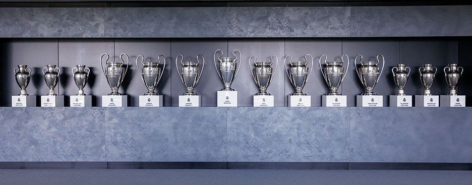

Todos sus titulos o premios conseguidos
35 Ligas, 20 Copas del Rey, 12 Supercopas de España, 1 Copa de Liga, 14 Champions League | Champions League (8) + Copas de Europa (6), 2 Copa de la UEFA, 8 Copas Intercontinental/ Mundiales de Clubes | Copas Intercontinental (3) + Mundial de Clubes -FIFA World Cup- (5), 5 Supercopas de Europa, 1 Copa Eva Duarte y por último el TROFEO FIFA AL MEJOR CLUB DEL SIGLO XX el 11 de diciembre del año 2000.